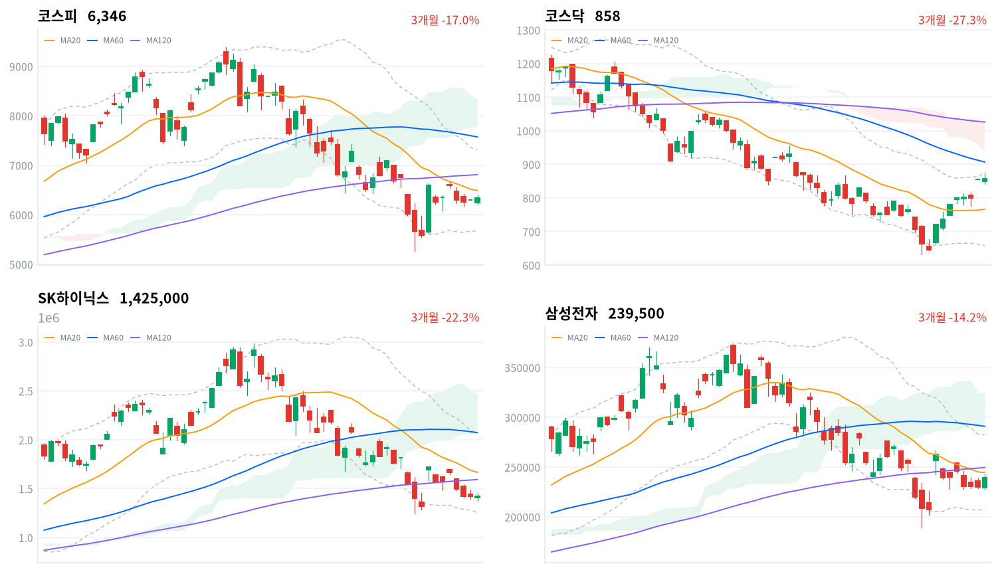
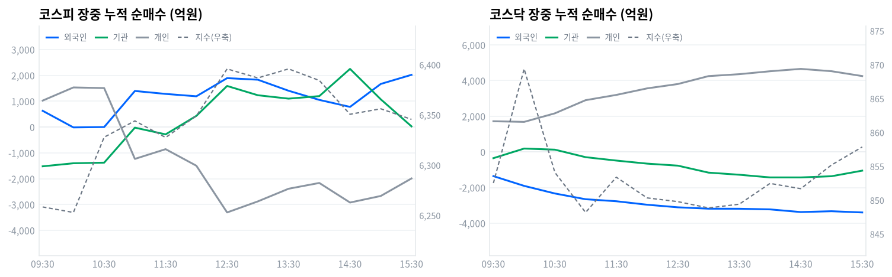

동인 코스피는 개장 직후 전일 미국 SanDisk의 실적 가이던스 실망 등 미국 반도체주 약세 여파로 6,213.78포인트까지 밀렸다가(장중 저점), 관세청이 발표한 8월 1~10일 반도체 수출 서프라이즈(반도체 수출 99.52억달러, 전년동기 대비 +155.4%)와 삼성전자의 개별 반등(4%대, 실적 컨퍼런스콜 주주환원 기대·엔비디아 차세대 AI칩 '루빈 울트라' HBM 사양 하향 소식이 오히려 기회 요인으로 해석된 점이 겹친 결과로 보도된다)에 힘입어 6,405.81포인트까지 오른 뒤 6,345.53포인트(+0.73%)로 마쳤다. 코스닥은 848.59포인트에서 출발해 오전 10시 무렵 869.38포인트까지 뛴 뒤 등락을 거쳐 857.84포인트(+0.39%)로 강보합 마감했다.
크로스에셋·수급 정합성 이날 반등의 화력은 지수 상승폭만큼 크지 않았다. 코스피 수급은 외국인 443억원, 기관 305억원 순매수(모두 당일 잠정)에 그쳤고 개인은 708억원을 순매도해 — 지수를 밀어올릴 만한 뚜렷한 매수 주체가 없었던 셈이고, 삼성전자 한 종목에 매수가 집중된 결과로 읽을 수 있다. 프로그램 매매도 비차익 37억원 순매수, 차익 134억원 순매도로 전체 97억원 순매도(당일 잠정)를 기록해 오늘 상승이 프로그램 주도가 아니었다는 점을 뒷받침한다. 코스닥은 정반대로 개인이 4,351억원을 순매수하고 외국인·기관이 각각 3,582억원·966억원을 순매도했는데도 지수가 올라, 개인의 저가 매수 심리가 짧게 시장을 지지한 흐름이었다.
다음 촉매·확인 트리거 코스피 종가는 20일선(6,492.90포인트)을 2.27% 밑돌고 일목균형표 구름대(7,772.73~8,329.31포인트)와는 여전히 거리가 멀어, 오늘 반등을 추세 전환으로 단정하기는 이르다. 20일선 회복 여부와 8월27일 한은 금통위, 관세청의 8월 중순 수출 통계 발표가 다음 확인 지점이다. 코스닥은 볼린저 상단(874.45포인트)에 %b 0.923으로 바짝 붙어 단기 과열 신호가 있는 만큼, 상단 돌파의 지속 여부와 20일선(766.31포인트) 지지 유지 여부를 함께 지켜봐야 한다.
| 지수 | 종가 | 등락률 | 일중 고가 | 일중 저가 |
|---|---|---|---|---|
| 코스피 | 6,345.53 | +0.73% | 6,405.81 | 6,213.78 |
| 코스닥 | 857.84 | +0.39% | 875.16 | 840.45 |
코스피는 전일 종가(6,299.66포인트) 대비 갭다운 출발한 6,240.06포인트에서 장을 열었다. 개장 초반 6,213.78포인트(일중 저점)까지 밀렸으나 삼성전자에 매수가 몰리며 반등해 09시30분 6,258.37포인트, 10시30분 6,327.78포인트, 11시00분 6,344.02포인트로 올라섰다.
이후 11시30분 6,327.49포인트로 잠시 숨고르기한 뒤 12시00분 6,348.98포인트, 12시30분 6,395.74포인트까지 재차 오르며 일중 고점(6,405.81포인트)을 형성했고, 13시30분 6,395.75포인트로 고점권을 유지하다 14시30분 6,350.58포인트로 상승폭을 일부 반납한 뒤 15시00분 6,356.05포인트를 거쳐 6,345.53포인트(+0.73%)로 마감했다.
코스닥은 전일 종가(854.47포인트) 대비 갭다운 출발한 848.59포인트에서 장을 열었다. 09시00분 847.41포인트로 잠시 더 밀렸다가 09시30분 852.51포인트로 반등했고, 10시00분에는 869.38포인트까지 뛰어올라 일중 고점(875.16포인트) 부근에 근접했다.
이후 10시30분 854.08포인트로 급하게 되밀린 뒤 11시00분~13시30분 사이 848~853포인트대의 좁은 박스권을 오갔고, 14시00분 852.46포인트, 14시30분 851.68포인트를 거쳐 15시00분 855.18포인트로 재차 오르며 15시30분 857.84포인트(+0.39%)로 마감했다.
이날 개장 초반 약세의 트리거는 전일 미국 증시에서 SanDisk가 실망스러운 실적 가이던스를 내놓으며 반도체주가 흔들린 여파였다(서울신문·이투데이·뉴스핌 등 보도). 반등의 트리거는 관세청이 발표한 8월 1~10일 반도체 수출 서프라이즈(총수출 213억달러 +45.3% YoY, 반도체 수출 99.52억달러 +155.4% YoY, 반도체 비중 46.8%)와 삼성전자의 개별 반등이었다(edaily·파이낸셜뉴스 등 보도).
SK하이닉스는 같은 반도체 대형주지만 이날 상대적으로 부진했다는 장중시황 기사 제목이 확인되나, 그 원인은 오늘자 기사로 명확히 확인되지 않아 단정하지 않는다.

코스피 코스피는 6,345.53포인트로 마감해 20일선(6,492.90포인트)·60일선(7,572.71포인트)·120일선(6,810.76포인트)을 모두 밑도는 혼조 배열이며, 20일선 대비 이격도는 -2.27%다. 볼린저밴드(20,2σ) %b는 0.411로 중심선(6,492.90포인트)과 하단(5,660.71포인트) 사이에 위치하고, 일목균형표 구름대(7,772.73~8,329.31포인트) 아래에서 전환선(6,111.04포인트)은 웃돌지만 기준선(6,795.01포인트)은 밑돈다. 반등 시나리오는 20일선(6,492.90포인트) 회복이 1차 트리거로, 이를 넘으면 기준선(6,795.01포인트)을 거쳐 20일 스윙 고점(7,424.18포인트)이 다음 목표가 된다. 반대로 전환선(6,111.04포인트)을 이탈하면 20·60일 저점인 5,262.77포인트가 최후 지지선이다.
코스닥 코스닥은 857.84포인트로 20일선(766.31포인트)을 11.94% 웃돌지만 60일선(906.67포인트)·120일선(1,025.63포인트)은 밑도는 역배열 구조다. 볼린저 %b는 0.923으로 상단(874.45포인트)에 바짝 붙어 단기 과열 신호가 뚜렷하고, 일목균형표 구름대(938.94~1,026.70포인트) 아래에서 전환선(759.05포인트)·기준선(753.07포인트)은 모두 상회했다. 상승 시나리오는 볼린저 상단(874.45포인트, 20일 스윙 고점 875.16포인트와 거의 일치)의 돌파가 트리거이며, 이를 넘으면 추가 상단 목표를 새로 설정해야 한다. 되돌림이 나온다면 전환선(759.05포인트)·기준선(753.07포인트)이 1차 지지이고, 20일선(766.31포인트)까지 무너지면 20·60일 저점인 630.99포인트가 최후 지지선이 된다.
SK하이닉스 SK하이닉스는 1,425,000원으로 마감해 20일선(1,666,300원)·60일선(2,073,250원)·120일선(1,592,892원)을 모두 밑도는 혼조 배열이며 20일선 대비 이격도는 -14.48%다. 볼린저 %b는 0.208로 하단(1,252,677원)에 근접해 있고, 일목균형표 전환선(1,502,500원)조차 밑돈 채 구름대(2,054,000~2,468,500원)와는 거리가 멀다. 반등 시나리오는 전환선(1,502,500원) 회복이 1차 트리거로, 이를 넘으면 기준선(1,871,500원)이 다음 저항이 된다. 반대로 밀리면 볼린저 하단(1,252,677원)을 거쳐 20·60일 저점인 1,246,000원이 최후 지지선이다.
삼성전자 삼성전자는 239,500원으로 마감해 20일선(244,450원)·60일선(290,983원)·120일선(249,557원)을 모두 밑도는 혼조 배열이고 20일선 대비 이격도는 -2.02%다. 볼린저 %b는 0.435로 중심선(244,450원) 부근에 위치하며, 일목균형표 전환선(234,500원)은 웃돌지만 기준선(257,100원)과 구름대(293,750~325,000원)는 아직 멀다. 반등 시나리오는 20일선(244,450원) 회복이 1차 트리거로, 이를 넘으면 기준선(257,100원)을 거쳐 20일 스윙 고점(284,500원)이 다음 목표가 된다. 반대로 전환선(234,500원)을 이탈하면 20·60일 저점인 189,200원이 최후 지지선이 된다.
위 레벨은 kr_technical.json의 이동평균·볼린저밴드·일목균형표·스윙 고저를 기계적으로 계산한 것으로, 투자 권유가 아니다.
코스피 수급표를 보면 외국인이 443억원, 기관이 305억원 순매수(모두 당일 잠정)한 반면 개인은 708억원을 순매도했다 — 방향은 지수 상승(+0.73%)과 일치하지만 합산 규모(748억원)가 크지 않아, 삼성전자 한 종목 집중 매수가 지수를 견인한 결과로 읽힌다. 코스닥은 반대로 개인이 4,351억원을 순매수하고 외국인·기관이 각각 3,582억원·966억원을 순매도했는데도 지수가 올라, 개인 저가 매수세가 짧게 시장을 지지한 하루였다.
| 코스피 (억원, 당일 잠정) | 개인 | 외국인 | 기관 |
|---|---|---|---|
| 2026-08-11 | -708 | +443 | +305 |
| 코스닥 (억원, 당일 잠정) | 개인 | 외국인 | 기관 |
|---|---|---|---|
| 2026-08-11 | +4,351 | -3,582 | -966 |
코스피에서 외국인·기관의 순매수 규모(443억원·305억원)는 개인의 순매도(708억원)를 겨우 상쇄하는 수준이라, 지수가 0.73% 오른 동력을 넓은 수급 유입만으로 설명하기는 어렵다. 삼성전자 한 종목에 매수가 쏠린 결과 지수가 오른 것으로 보는 편이 합리적이다. 코스닥에서는 외국인·기관이 함께 순매도(3,582억원·966억원)했음에도 개인 매수(4,351억원)가 이를 받아내며 지수를 밀어올렸는데, 이는 얇은 코스닥 수급 구조에서 개인 주도 반등이 짧게 나타난 전형적인 패턴이다.

| 시각 | 코스피 (억원) | 코스닥 (억원) | ||||
|---|---|---|---|---|---|---|
| 개인 | 외국인 | 기관 | 개인 | 외국인 | 기관 | |
| 09:30 | 1,024 | 628 | -1,521 | 1,720 | -1,359 | -352 |
| 10:00 | 1,533 | -15 | -1,403 | 1,684 | -1,907 | 187 |
| 10:30 | 1,508 | -1 | -1,379 | 2,164 | -2,333 | 126 |
| 11:00 | -1,234 | 1,396 | -24 | 2,902 | -2,656 | -296 |
| 11:30 | -857 | 1,282 | -284 | 3,198 | -2,769 | -487 |
| 12:00 | -1,498 | 1,190 | 432 | 3,564 | -2,964 | -658 |
| 12:30 | -3,307 | 1,893 | 1,590 | 3,808 | -3,109 | -771 |
| 13:00 | -2,879 | 1,832 | 1,231 | 4,253 | -3,186 | -1,163 |
| 13:30 | -2,389 | 1,405 | 1,099 | 4,361 | -3,189 | -1,282 |
| 14:00 | -2,165 | 1,051 | 1,197 | 4,525 | -3,226 | -1,432 |
| 14:30 | -2,923 | 780 | 2,251 | 4,658 | -3,375 | -1,433 |
| 15:00 | -2,669 | 1,668 | 1,073 | 4,528 | -3,329 | -1,366 |
| 15:30 | -1,991 | 2,021 | 26 | 4,255 | -3,398 | -1,052 |
코스피 외국인 누적선은 오전 10시07분 순매수에서 순매도로 꺾여 10시10분(-349억원)까지 저점을 찍은 뒤 10시13분 다시 순매수로 돌아섰다(peak 10시18분 +664억원) — 이 구간은 지수가 개장 초반 저점(6,213.78포인트)에서 반등을 시작하던 시점과 겹친다. 이후 외국인은 반전 없이 매수 강도를 키워 15시21분 관측 구간 내 최댓값(+2,021억원)을 찍고 그 수준 부근에서 장을 마쳤다.
개인은 정반대로 09시16분 순매도에서 순매수로 돌아서 10시09분 고점(+2,952억원)을 찍은 뒤 10시49분 다시 순매도로 전환, 12시28분 저점(-3,321억원)까지 매도를 키웠는데 이는 지수가 장중 고점권(12시30분 6,395.74포인트)에 있던 시점과 겹쳐 개인이 강세 구간에서 차익 실현에 나섰음을 보여준다.
기관 누적선은 10시55분 순매도에서 순매수로(peak 10시55분 +272억원), 10시58분 다시 순매도로(peak 11시10분 -516억원) 두 차례 방향을 바꾼 뒤 11시45분부터는 반전 없이 순매수를 늘려 14시34분 관측 구간 내 최댓값(+2,596억원)까지 도달했다. 그런데 정규장 마지막 관측(15시30분)에서는 기관 누적이 +26억원까지 되돌아와 있어 14시34분 이후 약 1시간 사이 대부분의 누적 매수분을 반납한 셈이다.
세부 주체를 나누면 금융투자(프로그램·선물 연계, 기계적 성격)는 14시30분~15시00분 잠시 플러스(+338억원→+401억원)로 돌아섰다가 15시30분 다시 -790억원으로 꺾였고, 연기금등(정책성 장기 자금)도 12시30분 고점(+1,663억원) 이후 서서히 줄다가 15시00분부터 마이너스(-423억원→-474억원)로 전환해 — 기관 매수 반납이 프로그램 성격과 정책성 자금 양쪽에서 동시에 일어난 흐름으로 판단된다.
정규장 마지막 관측치(15시30분) 기준 코스피 외국인 누적은 +2,021억원, 기관은 +26억원, 개인은 -1,991억원이었으나, 이후 확정 발표된 수치는 외국인 +443억원(당일 잠정)·기관 +305억원·개인 -708억원으로 정정됐다 — 외국인 매수가 확정 과정에서 1,578억원 줄어든 반면 개인 매도는 1,283억원, 기관 매수는 279억원 각각 줄었다. 코스닥 외국인은 장중 방향 전환 없이(turns 없음) 순매도를 이어갔다 — 09시01분 -170억원에서 15시19분 -3,401억원까지 반전 없이 매도 강도를 키웠다.
개인도 반전 없이 매수를 늘려 09시01분 +357억원에서 14시31분 +4,665억원까지 순매수를 키운 뒤 소폭 줄어든 채 마쳤고, 기관은 09시51분 순매도에서 순매수로(peak 10시16분 +411억원) 돌아섰다가 10시51분 다시 순매도로 전환해 14시03분 저점(-1,439억원)을 찍은 뒤 되돌림을 보였다. 코스닥 정규장 마지막 관측(개인 +4,255억·외국인 -3,398억·기관 -1,052억)과 확정치(개인 +4,351억·외국인 -3,582억·기관 -966억)의 차이는 코스피보다 작았다.
다음 거래일에는 코스피 외국인의 대폭 정정(-1,578억원)이 반복되는 패턴인지, 15시 이후 기관 이탈이 재현되는지를 확인할 필요가 있다.
| 구분 (억원, 당일 잠정) | 차익 순매수 | 비차익 순매수 | 전체 순매수 |
|---|---|---|---|
| 코스피 | -134 | +37 | -97 |
| 코스닥 | -6 | -3,107 | -3,113 |
코스피 프로그램 매매는 비차익(방향성 바스켓) 37억원 순매수와 차익(선물 연계 기계적) 134억원 순매도가 상쇄돼 전체로는 97억원 순매도(당일 잠정)에 그쳤다 — 사실상 중립에 가까운 수준이라, 지수 상승(+0.73%)이 프로그램 매매가 아니라 개별 종목(삼성전자) 직접 매수에서 비롯됐다는 §2·§5의 판단과 정합한다. 이는 앞선 장중 수급 전개에서 금융투자(기관 세부주체)가 15시30분 -790억원으로 마감한 흐름과도 방향이 겹친다.
코스닥은 비차익 3,107억원 순매도가 전체 순매도(3,113억원)를 사실상 주도했는데, 이 방향은 코스닥 외국인 순매도(3,582억원, 당일 잠정)와 일치해 오늘 코스닥 외국인 매도의 상당 부분이 방향성 바스켓을 통해 집행됐을 가능성을 시사한다.
| 순위 | 종목/ETF | 구분 | 거래대금 | 거래량 | 비고 |
|---|---|---|---|---|---|
| 1 | 삼성전자 | - | 5.51조 | 23,197,807 | - |
| 2 | SK하이닉스 | - | 5.21조 | 3,682,655 | - |
| 3 | 반도체 테마 ETF | 롱 | 1.61조 | 56,669,902 | 10종 합산 |
| 4 | 삼성전자우 | - | 0.42조 | 2,382,128 | - |
| 5 | SK하이닉스 레버리지 | 롱 | 0.37조 | 53,592,024 | 2종 합산 |
| 6 | 한화솔루션 | - | 0.33조 | 9,117,118 | - |
| 7 | 대원전선 | - | 0.27조 | 17,268,848 | - |
| 8 | 삼화콘덴서 | - | 0.20조 | 2,315,045 | - |
| 9 | 삼성전자 레버리지 | 롱 | 0.18조 | 18,390,987 | 2종 합산 |
| 10 | SK하이닉스 인버스 | 숏 | 0.17조 | 15,310,662 | - |
SK하이닉스 레버리지(0.37조원)가 인버스(0.17조원)의 두 배 이상으로, 개인이 SK하이닉스를 숏이 아니라 저가 매수 기회로 받아들였음을 보여준다. 반도체 테마 ETF는 SOL AI반도체TOP2플러스·TIGER 반도체TOP10·KODEX AI반도체TOP2플러스·KODEX 반도체레버리지·ACE K반도체TOP2+·SOL 반도체전공정·TIGER 반도체TOP10레버리지·SOL AI반도체소부장·KODEX 반도체·TIGER 반도체TOP10커버드콜액티브 등 10종을 합산한 값(1.61조원)이다.
같은 반도체 계열 개별주(삼성전자 5.51조+SK하이닉스 5.21조+삼성전자우 0.42조)와 레버리지 상품(SK하이닉스 0.37조+삼성전자 0.18조)을 더하면 11.69조원에 달해 테마 바스켓(1.61조원)의 7배를 웃돈다 — 오늘 반도체 수급은 산업 전체를 바스켓으로 산 게 아니라 삼성전자·SK하이닉스 개별 종목에 선별적으로 집중됐다는 뜻이고, §7에서 확인되는 '반도체와반도체장비' 업종의 폭넓은 상승(+2.52%, breadth 0.713)과도 방향은 일치한다.
한화솔루션(0.33조원)은 미국 정부의 폴리실리콘·태양광 232조 관세 조치의 수혜 재료가 이어지며 거래대금 상위에 재진입했다. 대원전선(0.27조원)은 AI 데이터센터발 전력 수요 확대와 구리 가격 상승을 배경으로 한 전력 인프라 테마의 연장선으로 풀이되고, 삼화콘덴서(0.20조원)는 AI 서버용 MLCC 수요 확대 기대가 반복적으로 거론되는 종목이다. 다만 세 종목 모두 오늘자 구체적인 등락률·특이 재료는 확인된 기사가 제한적이라, 최근 흐름의 연장선이라는 맥락으로만 다루고 임의의 등락률을 붙이지 않았다.
위 섹터 차트(1D 기준 12개 테마)에서는 소프트웨어(+2.88%)·반도체(+2.29%)·헬스케어(+1.03%)가 상위권이었고, 방산(-6.96%)·조선(-4.08%)·2차전지(-2.81%)가 약세를 보였다. 더 세분화된 kr_industry.json(60개 업종) 기준으로 반도체와반도체장비는 +2.52%(171종목 중 122종목 상승, breadth 0.713, 폭넓은 상승 주도)로 오늘의 핵심 재료(반도체 수출 서프라이즈·반도체특별법 시행)와 가격·폭이 모두 정합했다.
게임엔터테인먼트(+2.65%, breadth 0.794)·제약(+2.45%, breadth 0.714)·손해보험(+1.91%, breadth 0.917)도 폭넓은 상승 주도로 분류됐다.
반면 IT서비스(+3.63%, 117종목 중 72종목 상승, breadth 0.615)는 등락률 자체는 반도체보다 높지만 kr_industry.json이 '좁은 상승·개별종목'으로 분류해, 상승률만으로 주도 업종이라 부르기 어렵다. 문구류(+19.22%)·복합유틸리티(+4.31%)는 등락률이 가장 높았지만 각각 구성 종목이 1개뿐이라 대표성이 낮은 업종이며, 창업투자(+1.43%, breadth 0.222)·에너지장비및서비스(+1.37%, breadth 0.5)도 '좁은 상승·개별종목'으로 분류돼 업종 전체가 아니라 일부 종목의 급등이 평균을 끌어올린 경우다.
하락률 최대는 자동차(-1.03%, breadth 0.417)였다.
삼성전자는 오늘 거래대금 1위(5.51조원)에 오르며 지수 반등을 견인했다. 관세청이 발표한 반도체 수출 서프라이즈에 더해 실적 컨퍼런스콜에서 나온 추가 주주환원 기대, 엔비디아 차세대 AI칩 '루빈 울트라'의 HBM 사양이 하향 조정됐다는 소식이 오히려 삼성전자엔 기회 요인으로 해석된 점이 겹치며 4%대 반등으로 이어졌다고 보도된다(edaily·파이낸셜뉴스 등). SK하이닉스는 거래대금 2위(5.21조원)를 지켰지만 장중시황 기사 제목 기준으로는 상대적으로 부진했던 것으로 확인되며, 다만 정확한 원인은 오늘자 기사로 뚜렷이 확인되지 않아 단정하지 않는다.
삼화콘덴서(0.20조원)는 AI 서버용 MLCC(적층세라믹콘덴서) 수요 확대와 전기차 시장 성장 기대가 최근 주가 강세의 배경으로 반복 보도돼 왔다(MSN 보도). 대원전선(0.27조원)은 AI 데이터센터 증설에 따른 전력 수요 급증, 구리 가격 상승, 노후 전력망 교체 주기 도래가 전선주 전반의 강세 배경으로 거론되는 종목이다(모닝테이프 보도, 7월초 상한가 당시 기준). 두 종목 모두 오늘 거래대금 상위 재진입은 같은 테마의 수급 연장선으로 볼 수 있으나, 오늘자 구체 등락률은 확인되지 않아 임의로 서술하지 않는다.
한화솔루션(0.33조원)은 미국 정부가 8월6일 무역확장법 232조에 근거해 폴리실리콘·태양광 파생상품에 최저수입가격(MIP)과 관세를 부과하는 포고령을 발표(12월4일 시행 예정)한 이후 미국 현지 생산기반 보유 기업으로서 수혜주로 부각돼 8월7일 20%대 급등한 바 있다(뉴스핌·이투데이 등 보도). 오늘 거래대금 상위 재진입은 이 재료가 아직 완전히 소화되지 않았거나 추가 확인 수요가 있다는 뜻으로 읽을 수 있다.
이번 사이클 입력 자료에는 원/달러 환율 데이터가 포함되지 않아, 아래 국고채 금리만 다룬다.
| 지표 | 금리 | 전일比(bp) | 기준일 |
|---|---|---|---|
| 국고채 3년 | 3.808% | +3.0bp | 2026-08-11 |
| 국고채 10년 | 4.301% | +6.2bp | 2026-08-11 |
| CD 91일 | 2.930% | +0.0bp | 2026-08-11 |
| 회사채 AA- 3년 | 4.504% | +2.8bp | 2026-08-11 |
| 한국은행 기준금리 | 2.750% | +25.0bp | 2026-07 (7월 기준, 전월比) |
국고채 3년물(+3.0bp)보다 10년물(+6.2bp)이 두 배 넘게 올라 3s10s 스프레드는 49.3bp(10년 4.301%-3년 3.808%)로 전일(46.1bp, 10년 4.239%-3년 3.778%)보다 3.2bp 벌어졌다 — 장기물이 더 크게 오른 약한 베어 스티프닝이다. 코스피·코스닥이 나란히 오른 날 채권 금리도 전 구간에서 상승했다는 점은, 오늘 증시 반등이 유동성 완화가 아니라 반도체 수출 서프라이즈 같은 개별 재료에서 비롯됐다는 §2의 판단과 겹친다.
국고채 3년물(3.808%)은 한국은행 기준금리(2.75%, 7월 기준)보다 105.8bp 높아, 8월27일 금통위를 앞두고 추가 인상 기대가 시장금리에 여전히 상당 부분 선반영돼 있다는 뜻이다. 회사채 AA- 3년물과 국고채 3년물의 신용 스프레드는 전일 69.8bp(4.476%-3.778%)에서 오늘 69.6bp(4.504%-3.808%)로 거의 변화가 없어, 신용 심리에 뚜렷한 변화는 없었다. 다만 원/달러 환율 데이터가 없어 국고채 10년물·외국인 순매수(+443억원, 당일 잠정)·환율의 삼각 연계는 이번 사이클에서 확인하지 못했다.
'반도체산업 경쟁력 강화 및 지원에 관한 특별법' 시행령이 국무회의를 통과해 오늘(8월11일)부터 시행됐다. 반도체 클러스터 조성에 필요한 전력·용수 등 산업기반시설 비용을 국가·지자체가 총사업비의 50~100% 지원하고, 이중화시설·공급망 안전시설은 비용 전액 지원이 가능하다. 클러스터 지정 시 비수도권을 우대하며, 대통령이 위원장을 맡는 반도체산업경쟁력강화특별위원회도 함께 출범한다. 법 본문 시행일은 9월18일이고, 재원인 반도체 특별회계는 2027년경 약 2조원 규모로 신설될 예정이다(관련 보도 종합).
전달 경로는 이익이다 — 삼성전자·SK하이닉스가 추진 중인 대규모 클러스터(용인 등) 인프라 투자의 원가 부담이 국가 지원으로 줄어들어 설비투자 대비 미래 이익 기여가 커진다. 동시에 정책 불확실성이 해소되며 반도체 밸류체인 전반의 정책 리스크 프리미엄이 낮아지는 멀티플 경로도 있다.
삼성전자·SK하이닉스 등 클러스터 투자 주체와 비수도권 소재 반도체 장비·소재 기업이 직접 수혜 구간이다. 오늘 반도체와반도체장비 업종이 +2.52%(폭넓은 상승 주도, breadth 0.713)를 기록해 재료와 가격이 정합했지만, 오늘 상승의 직접 동인은 반도체 수출 서프라이즈(아래 블록) 비중이 더 커 보이며 특별법 시행은 배경 재료로 겹친 것으로 판단한다.
반도체혁신지원단이 8월 중 구성될 예정이며, 법 본문 시행일(9월18일)에 클러스터 지정 등 후속 절차가 본격화되는지가 다음 확인 지점이다. 특별회계 2조원 신설(2027년) 관련 예산안의 국회 심의 일정은 미확정이다.
관세청이 오늘 발표한 8월 1~10일 수출입 동향에 따르면 총수출은 213억달러(+45.3% YoY, 해당 기간 역대 최대)를 기록했고, 반도체 수출은 99.52억달러(+155.4% YoY, 8월 상순 기준 역대 최대)로 전체 수출의 46.8%(전년동기 대비 +20.1%p)를 차지했다(이투데이·edaily·한국경제 등 보도).
전달 경로는 이익 직접이다 — 반도체 대형주의 3분기 실적 눈높이가 상향될 근거가 되며, 외국인 현물·프로그램 매매 유입을 자극하는 경로다.
삼성전자(오늘 4%대 반등의 직접 배경)·SK하이닉스 등 반도체 대형주와 장비·소재 밸류체인이 수혜 구간이다. 반면 대중국(+134.8%)·홍콩(+259.4%)·EU(+57.2%) 수출이 늘어난 것과 달리 대미 수출은 -0.2%로 줄어, 관세 영향을 받는 업종(태양광·2차전지 등 대미 비중이 높은 업종)엔 주의 신호로 남는다.
관세청의 8월 중순·월말 수출 통계 추가 발표와 10월 3분기 실적 발표 시즌에 이 서프라이즈가 실제 실적으로 확인되는지가 다음 트리거다.
미 백악관이 8월6일 무역확장법 232조에 근거한 포고령을 발표해 폴리실리콘·잉곳/웨이퍼·태양광 셀/모듈에 최저수입가격(MIP)과 관세를 부과하기로 했다(폴리실리콘 kg당 21달러, 잉곳·웨이퍼 kg당 100달러, 셀 W당 0.22달러, 모듈 W당 0.38달러). 시행은 12월4일(미 동부시간) 예정이며, 한국의 대미 폴리실리콘 수출은 약 220만달러, 파생상품 수출은 약 4억3,000만달러 규모로 크지 않지만 밸류체인 전반에 영향을 준다. 산업통상자원부는 기업 피해 최소화를 위해 협의 중이라는 입장이다(뉴스핌·이투데이·한국일보 등 보도).
전달 경로는 이익이다 — 미국 현지 생산기반(한화솔루션 조지아 공장 등)을 갖춘 기업은 중국산·동남아 우회 저가재 억제로 반사이익을 보지만, 비중국산에도 동일 규제가 적용돼 원가 부담이 함께 발생하는 이중적 구조다.
한화솔루션·OCI홀딩스가 8월7일 각각 20%대·14%대 급등하며 이미 재료를 선반영했다. 오늘 한화솔루션이 거래대금 상위(0.33조원)에 재진입한 것은 재료가 완전히 소화되지 않았거나 추가 확인 수요가 있다는 뜻으로 볼 수 있어, "이미 선반영"과 "추가 확인 대기" 사이의 경계 국면으로 판단한다.
12월4일 시행 전까지 미 상무부의 세부 기준·예외 적용 발표, 산업통상자원부와 미 정부 간 협의 결과가 다음 확인 트리거다. 구체 일정은 추가로 확정되지 않았다.
국민연금이 올해 국내주식 목표비중을 14.9%에서 20.8%로 상향했고, 1월부터 유예됐던 리밸런싱이 6월 말부터 재개됐다. 5월 말 기준 국내주식 투자 규모는 543.6조원으로 기금 적립금의 29.4%에 달한다(국민연금 자료 기반 보도).
전달 경로는 수급이다 — 목표비중 확대분만큼 국내 대형주에 대한 연기금의 순매수 여력이 구조적으로 늘어나며, 특히 지수 비중이 큰 반도체·플랫폼 대형주에 우호적인 흐름이다.
코스피 대형주 전반, 특히 연기금 보유비중이 큰 삼성전자·SK하이닉스가 수혜 구간이다. 오늘 코스피 기관이 305억원 순매수(당일 잠정)한 점은 이 흐름과 방향은 맞지만 규모가 크지 않아 결정적 동인으로 보기는 어렵다 — 장중 수급 전개(§5)에서 연기금등이 12시30분 고점(+1,663억원) 이후 15시 이후 마이너스로 돌아선 점을 감안하면, 오늘 하루만으로는 이 재료가 뚜렷이 반영됐다고 보기 어렵다.
국민연금 기금운용위원회의 분기별 자산배분 점검 일정은 구체 날짜가 확인되지 않아 "일정 미확정"으로 남긴다.